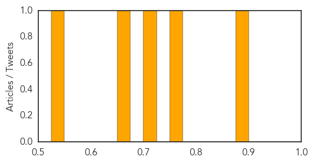

Mumps
30-Day Web Trend
4 alerts, 2 warnings
30-Day Twitter Trend
0 alerts, 0 warnings

Article Locations
Article Confidences

Top Articles:
Top Tweets:
-
No tweets found for Apr 10, 2014
Dengue Fever
30-Day Web Trend
5 alerts, 2 warnings
30-Day Twitter Trend
5 alerts, 0 warnings

Article Locations
Article Confidences
Top Articles:
- 0.878
- Kenya : Taming the mosquito menace
- 0.753
- Govt mulls forming dengue advisory committee
- 0.725
- Emergency aid headed to flooded Solomon Islands - Solomon Islands
- 0.659
- Dengue Mosquito Population Reduced by 79% in Jacobina, Bahia, Using Oxitec Solution
- 0.542
- Racing to combat the spread of disease in flood-ravaged Solomon Islands - Solomon Islands
Top Tweets:
-
No tweets found for Apr 10, 2014